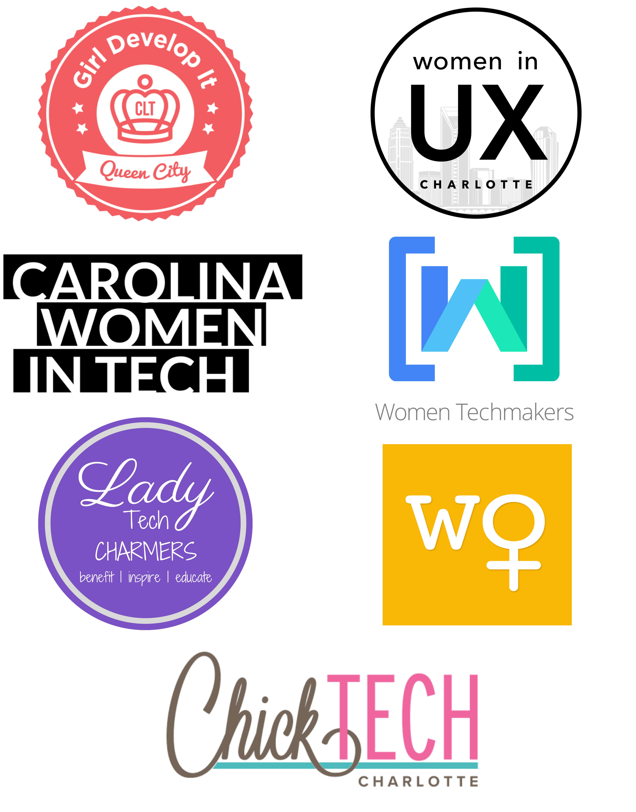

<section id="about" fxLayout="column" fxLayoutAlign="center center">
  <div
    class="about-description"
    fxLayout.lt-lg="column"
    fxLayoutAlign="center center"
  >
    <div class="about-left" fxFlex="40">
      <h1>Our Movement</h1>

      <p>
        <strong>CHARLOTTE</strong> is now unequivocally considered to be a major
        tech hub not only in the South, but on the East Coast at large. A
        significant factor in that growth has been the vibrant community of
        technologists we have cultivated and attracted to our market.
        #techyourseat is a collaborative effort combining a variety of the
        women-centered tech organizations and meetups in the Charlotte area.
      </p>
      <p>
        <strong>INDIVIDUALLY</strong> our groups aim to provide support,
        encouragement and educational resources to adult women interested in
        technology. We strive to lift up people who are brand new to the
        industry, as well as bolster seasoned technologists looking to grow and
        flourish in their chosen field.
      </p>
      <p>
        <strong>TOGETHER</strong> we are striving to amplify the voices of women
        in our community, expand the reach of our available support and
        resources, and provide a larger forum for people to network, learn about
        our mission and goals, and get inspired on their own journey through
        Charlotte’s bustling technology scene.
      </p>
      <p>Come to the table and <strong>#techYourSeat</strong>.</p>
    </div>

    <div class="about-right" fxFlex="40">
      <div
        class="about-image"
        fxLayout="column"
        fxLayoutAlign="space-between center"
      >
        
      </div>
    </div>
  </div>
</section>
